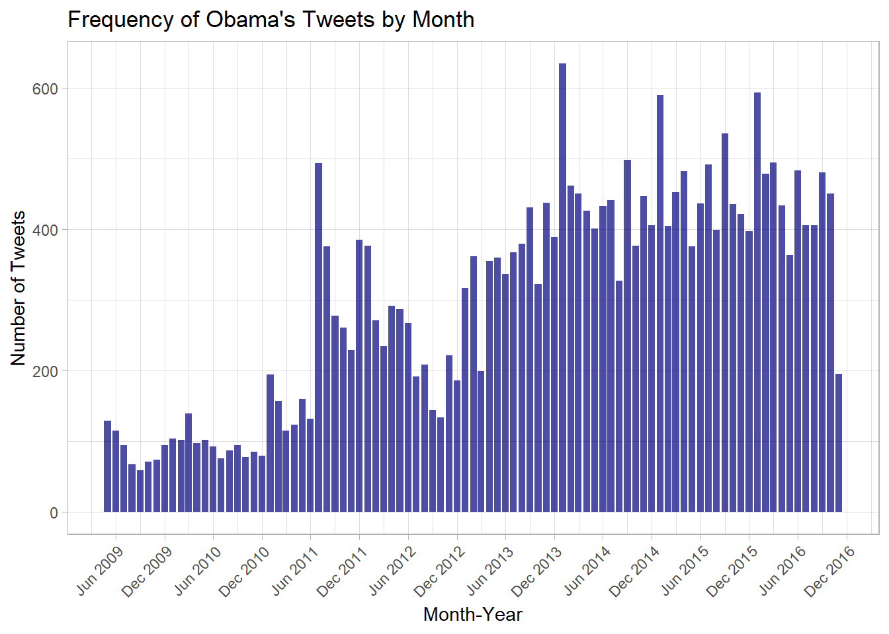
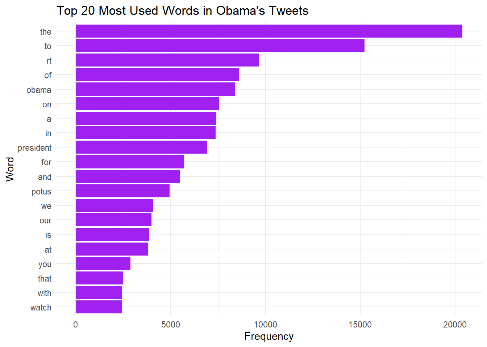

#Some of my libraries used
library(tidyverse)
library(lubridate)
library(rsample)
library(stringr)
library(lubridate)
library(tidytext)Whatcha Tweeting Mr. President? Analyzing the Tweets of President Barack Obama
due on Wednesday, March 4th 2025
In this project, we will be covering President’s Barack Obama’s various tweets during his time in office from 2015 to 2016 (during his last year). Obama was the first US President to use social media heavily during his stay in office, and have utilized it for his entire adminstration.
- Background/Introduction
According to the National Archieves, the Barack Obama Presidential Library’s Digital gives access to archived materials and substance during the Obama Adminstartion from 2009 - 2017. This includes things from pictures, datasets, social media, content, speechs, legislation, and much more during this historic President’s time in office. In this project, I analyzed, wrangled, and discussed the a dataset containing President’s Obama tweets from 2015 to the end of his campaign in 2016. I then discussed some potential variables / residuals that could explain some of the trends that you might see during my data collection and manipulation, providing insights into what everything means in the grand scheme of things.
knitr::include_graphics("Obama Picture.jpg", dpi = 300)
1a. Tweet Frequency
# Read the CSV file
tweets <- read_csv("tweets.csv")
# Convert timestamp column to Date format
tweets <- tweets |>
mutate(Date = as.Date(timestamp),
MonthYear = floor_date(Date, "month"))
# Count tweets per Month-Year
tweet_counts <- tweets |>
count(MonthYear)
# Ploting histogram
ggplot(tweet_counts, aes(x = MonthYear, y = n)) +
geom_col(fill = "navy", alpha = 0.7) +
theme_light() +
labs(title = "Frequency of Obama's Tweets by Month",
x = "Month-Year",
y = "Number of Tweets") +
scale_x_date(date_labels = "%b %Y", date_breaks = "6 months") +
theme(axis.text.x = element_text(angle = 45, hjust = 1))
Some insights that could be gained from this histrogram is that not only was Obama very active during this time but some trends that standout from it. It is clear that he tweeted the most during the summer of 2015. There are several factors that could be studied as to why this was the case (could be nice to see this with another regression :) ) but this was the time where political candidates were entering into joining the presidental race, Black Lives Matter and other civil unrest, etc. Let’s take a look into another graph that could tell us more about Obama’s Twitter endeavors using a line graph
1b. Heatmap (more nuanced)
tweets |>
filter(str_detect(text, "(?i)\\bamerica\\b")) |>
mutate(Year = year(Date), Month = month(Date, label = TRUE)) |>
count(Year, Month) |>
ggplot(aes(x = Month, y = as.factor(Year), fill = n)) +
geom_tile(color = "white") +
scale_fill_gradient(low = "orange", high = "red") +
theme_minimal() +
labs(title = "Obama's Tweet Frequency Heatmap (Mentions of 'America')",
x = "Month",
y = "Year",
fill = "Tweets")Here is another visualization behind Obama’s tweet using a heatmap. It seems that his most active month during this time span was in July of 2015. Doing some intial research, there was many legislation that was passed on this month including the Legalization of Same-Sex Marriage, the Iran Nuclear Deal, Presidental Campaigns and pacs being established for the upcoming election, racial justice and tension regarding the Confederate flag, and much more (Wellford, Rachel. “Trump, Clinton and the Top 10 Political Stories of 2015.” PBS NewsHour, 28 Dec. 2015, https://www.pbs.org/newshour/nation/trump-clinton-and-the-top-10-political-stories-of-2015.).
knitr::include_graphics("Obama on Phone.jpg", dpi = 300)
With these two graphs and visualizations, it is clear to see certain trends behind the tweeting patterns of former President Obama. Now, lets get into some \(str()\) action!
Part 2: String Fun!
Being the charamastic president he is, I remember some of his most used catchphrases or words growing up like the back of my hand. Let’s see some of the most frequently used words in his tweets.
I have done some additional work and removed some of the most commonly used words in English. This includes articles, preposistions, etc. I used the str_lower (to remove case-sensitive words), str_replace_all (to get rid of punction for easier wrangling)), and str_length(to compute and scan strings) to conuduct my operations.
# List of words to exclude (they do not offer much if included)
exclude_words <- c("you", "the", "to", "and", "a", "for", "on", "of")
tweets <- tweets |>
mutate(Date = as.Date(timestamp),
MonthYear = floor_date(Date, "month"))
tweets_clean <- tweets |>
mutate(text = str_to_lower(text), # Convert text to lowercase
text = str_replace_all(text, "[^a-z\\s]", ""), # Remove punctuation
text_length = str_length(text)) # Compute tweet length
# Tokenize, filter out specific words, and count words
word_counts <- tweets_clean |>
unnest_tokens(word, text) |>
filter(str_detect(word, "(?<!\\b(?:you|the|to|and|a|for|on|of)\\b)")) |>
count(word, sort = TRUE) |>
filter(n > 20) # Filter for commonly used words
# Display top words
print(head(word_counts, 20))# A tibble: 20 × 2
word n
<chr> <int>
1 the 255
2 to 249
3 and 131
4 of 126
5 a 117
6 we 91
7 for 90
8 in 89
9 our 88
10 on 60
11 you 57
12 with 44
13 more 43
14 it 42
15 is 41
16 this 41
17 that 40
18 can 38
19 as 37
20 i 35# Most used bigrams (two-word phrases)
bigram_counts <- tweets_clean %>%
unnest_tokens(bigram, text, token = "ngrams", n = 2) |>
count(bigram, sort = TRUE) %>%
filter(n > 10) # Adjust frequency threshold as needed
# Display top bigrams
print(head(bigram_counts, 20))# A tibble: 9 × 2
bigram n
<chr> <int>
1 of the 21
2 to the 19
3 for the 16
4 and the 15
5 we can 14
6 more than 13
7 of our 12
8 climate change 11
9 in the 11# Plot top words
word_counts |>
top_n(20, n) |>
ggplot(aes(x = reorder(word, n), y = n)) +
geom_col(fill = "purple") +
coord_flip() +
theme_minimal() +
labs(title = "Top 20 Most Used Words in Obama's Tweets",
x = "Word",
y = "Frequency")
These were Obama’s most used words in his tweets. “We” was the most used word followed by “in” and “our”. What might be learned from this was the Obama used his Twitter as a mechanism to advocate for Americans and for the world. The collectivist words used helped illustrate that narrative, and it’s very cool to see that unity. This could be attributed to the ground breaking legislation and speechs combating the subsequent racial and gender injustice in the United States during his most active streak in the summer of 2015 and throughout the timeframe as a whole. Some words that stood out to me was “American”, “All”, and “Today” which further drives the narrative of unity spurred throughout his presidency.
knitr::include_graphics("Obama writing.jpg", dpi = 300)
Part 3: Insights (What can we learn from this?)
From understanding these graphs and the words picked a part from Obama’s tweets, we can see an overaching narrative of unity and national pride throughout the latter end of this President’s career in office. The use of social media was implemented early in his career in office. During times like this, it is important to see how a public offical should be using social media as a bridge between indifference and not as a tool for division.
SOURCES:
Obama Presidential Library. “Archived White House Websites and Social Media.” Barack Obama Presidential Library, National Archives and Records Administration, https://www.obamalibrary.gov/digital-research-room/archived-white-house-websites-and-social-media. Accessed 4 Mar. 2025.
Wellford, Rachel. “Trump, Clinton and the Top 10 Political Stories of 2015.” PBS NewsHour, 28 Dec. 2015, https://www.pbs.org/newshour/nation/trump-clinton-and-the-top-10-political-stories-of-2015.